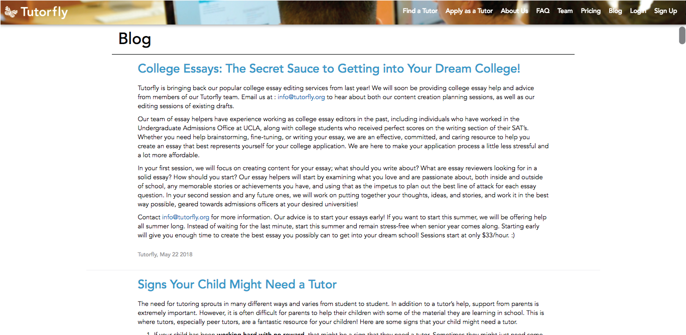
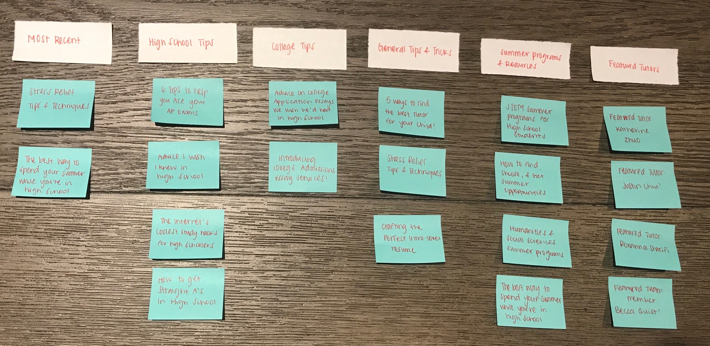
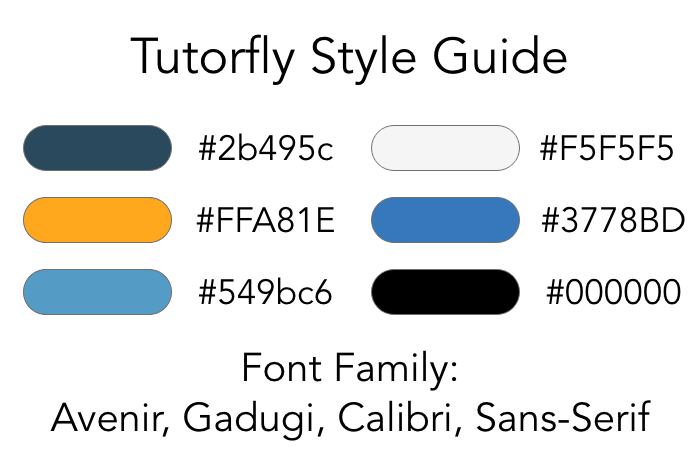
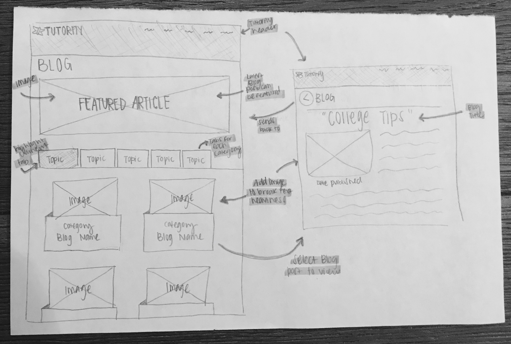
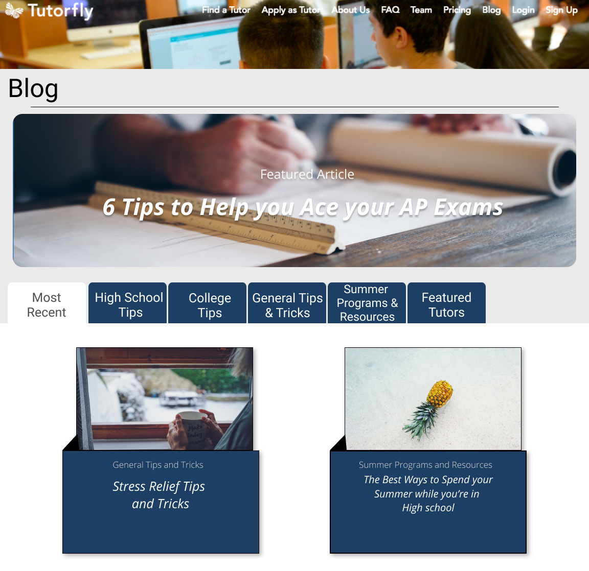

Tutorfly Inc.
January 2018 - June 2018
Role
- UX Researcher
- UX Designer
Skills
- Research
- Wireframing
- Visual Design
- Prototyping
Tools
- Figma
- Google Analytics
Deliverables
- Prototype
- Wireframes
Overview
Tutorfly is a tutoring platform whose mission is to provide an educational alternative to traditional classroom settings through peer-to-peer tutoring. As a UI/UX intern, I was responsible for re-evaluating the web experience of our users to improve navigation and create a seamless user interface. I did this by discussing design changes through weekly sprint meetings, conducting user surveys, and analyzing key performance indicators through Google Analytics. One of my biggest tasks was to redesign the tutorfly blog page to make it more practical and effective.
Research
One of my tasks while interning at Tutorfly was to analyze any key performance indicators using Google Analytics. In one of my bi-weekly analysis, I found that the blog page had one of the biggest bounce rates. This meant that many of our users were landing on the blog page but quickly left the page after viewing it for a brief moment. The tutorfly blog page contains several college-readiness resources for our high school students. Finding a high bounce rate for the blog page meant that many of our users (the majority of whom are high school students) were not taking advantage of the resources provided in the blog page. After conducting a few user surveys, I found that many users found the blog page to be too disorganized.
The Problem
Currently, the blog page is not organized by topics and is simply an infinite scroll page. In addition, the pictures displayed in the blog are not consistent and appear random.
Redesign
Initially, I was eager to start designing the page upfront. I quiclky realized that in order to design an effective new blog page, I needed to organize the page first. I began by writing each of the titles of the blog posts on sticky notes to get a visual representation on the number of posts I had to work with. I got the idea to group blog posts into categories through this strategy so then I started brainstorming category titles. I thought this information structure was best because one of the main issues with the current blog post was lack of organization. By categorizing blog posts, I was able to find a solution to the current infinite scroll page.
Once I organized the blog posts into categories, I then had to think about the visual design while keeping the Tutorfly style guide in mind. One design feature I kept close to mind when redesigning was the flow of the webpage. I wanted to ensure the new design flowed easily through each blog post and everything was easily accessible.
Another feature I had in mind was to break the text heaviness blog posts with fun and related images.
Having all these ideas in mind, I began to sketch a low-fidelity wireframe and laid out the organization of the new blog page. I then used Figma to create high-fidelity wireframes.
 Deliverables
After presenting my redesign to the rest of the Tutorfly team, the wireframes and prototype was send to the development team to build the website.